SearchLight is an Android app for before-and-after photo comparison.
Photograph a room, drawer, shelf, bag, or other belongings once.
Photograph the same scene later. SearchLight lines the two pictures up
and marks what looks different. You decide whether a mark matters.
Photos, session names, and masks stay on your device.
SearchLight does not create an account and does not upload your pictures.
What people use it for
Most sessions are ordinary inventory: a place you want to remember, then recheck.
Home inventory — a nightstand, closet, workbench, or desk drawer.
Shared spaces — a roommate kitchen, office drawer, or storage unit.
Projects — a display or workspace before and after you change it.
Travel — a hotel desk, rental, or packed bag when you leave and when you return.
The same flow works for travel security checks. SearchLight does not
decide that something was searched or stolen. It only shows differences so you can look.
Hotel or rental room — take a baseline of the room (or a desk, safe,
or bag) when you leave. Take a check photo when you return. Flip-flop or wipe to
see if items moved.
Laptop underside / screws — photograph the bottom of a laptop
(or other device) so screw heads, gaps, and labels are sharp. Later, take the
same shot and compare. A mark might be a screw that looks different, a label
that shifted, or just a reflection. You judge it.
Lighting will not match perfectly. The luminance histograms show that mismatch.
They do not score a “threat.” If alignment is poor, retake the photo or add tie points.
Start a session
The first screen is a list of sessions. If you have none yet, tap the purple
+ button.
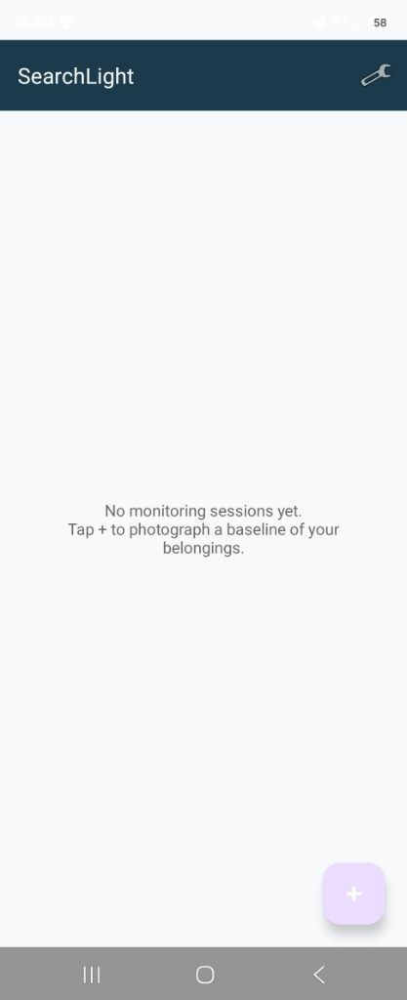
No sessions yet. Tap + to create one.
Name the session after the place or object, then tap Create Session.
Examples: Desk drawer, Nightstand, Hotel desk, Laptop bottom.
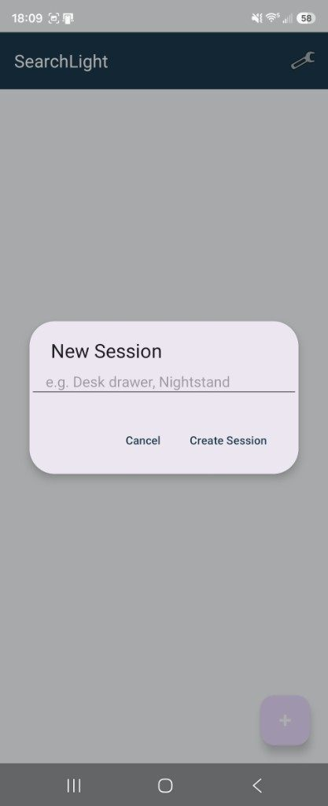
Give the session a name you will recognize later.
Each session keeps its own baseline, check photos, masks, and history.
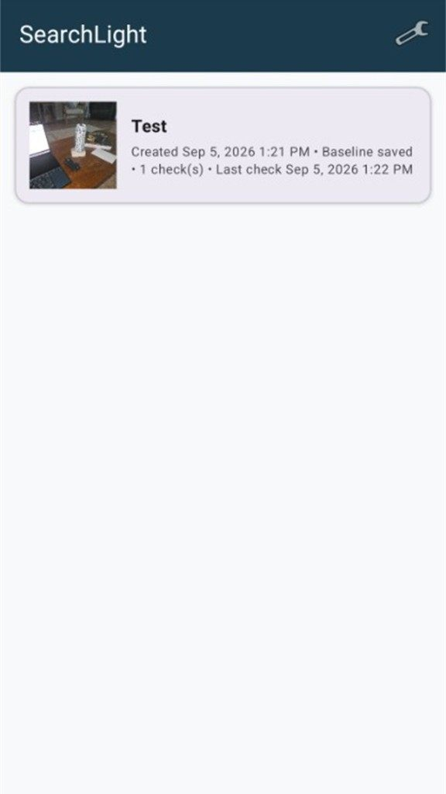
A session card shows when it was created and how many checks you have taken.
Take a baseline
Open the session and take a baseline — the “before” photo.
Use the camera or Pick from Gallery.
Fill the frame with the scene you care about. Get close for screws or a drawer interior.
Turn on the composition grid if you want a rule-of-thirds guide (on by default).
Use flash in dim rooms so later checks are easier to match.
Hold still. A sharp baseline is worth more than a wide, blurry one.
Take a check photo
When you want to recheck the same scene, open the session and choose
Take Check Photo or pick a photo from the gallery.
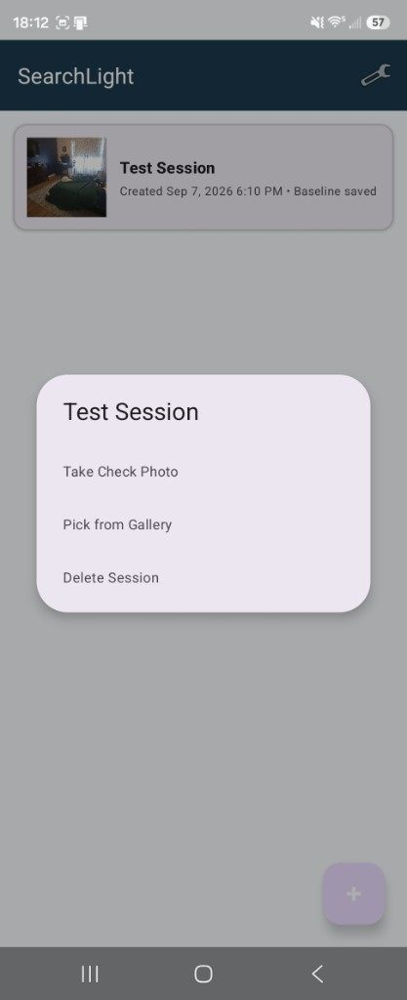
After a baseline is saved, take a check photo or pick one from the gallery.
The camera can show a ghost overlay of the baseline on top of the
live view. Line up edges, furniture, and labels with that ghost so the two photos
match. A grid and flash control sit on the same screen. Pinch to zoom the live
camera. When a later check is at a different zoom, tap Match zoom
to return to the zoom saved with the baseline.
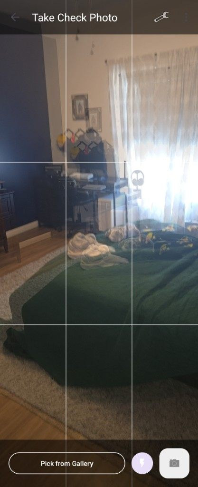
Ghost overlay plus the composition grid help you match the original angle.
Alignment
SearchLight tries to line the check photo up with the baseline automatically.
Then it shows an Alignment Review:
FoM (figure of merit) — how well the photos overlap, not how “important” a change is.
How many difference regions were marked, and what share of pixels they cover.
Good / Fair / Poor — whether the photos are lined up enough to be useful.
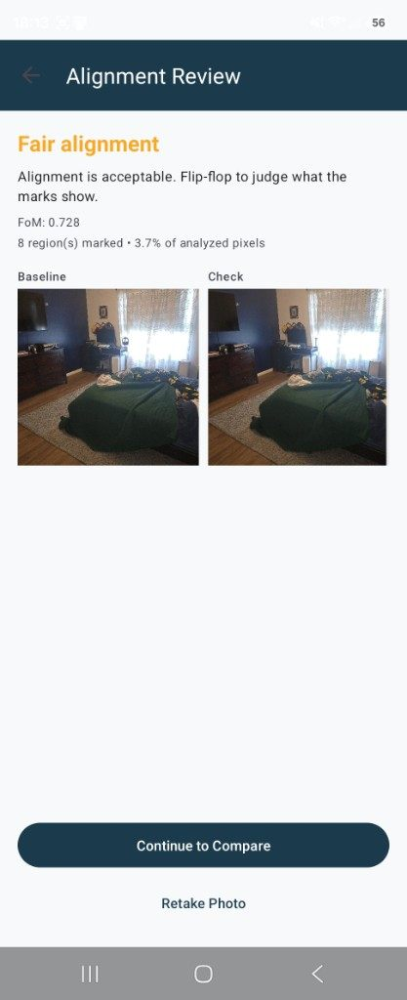
Fair alignment is usually enough. Continue, retake, or align by hand.
If auto-align fails or looks poor:
Retake Photo — often the best fix.
Align Manually — tap the same points on both images (corners of a laptop, a picture frame, a drawer pull). Pinch to zoom. Both images stay synced. Then Apply Alignment.
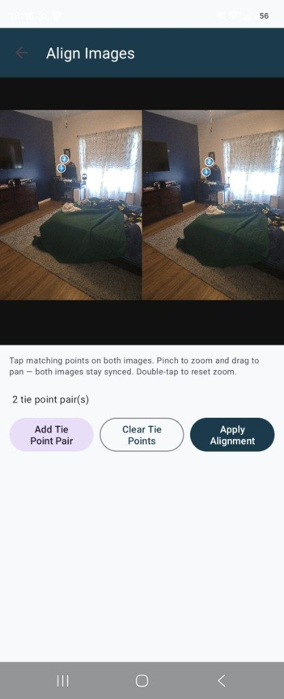
Tap matching points on both photos when automatic alignment is not enough.
Compare
Compare is where you look. Software marks difference pixels. It does not rank them
and it does not say what happened.
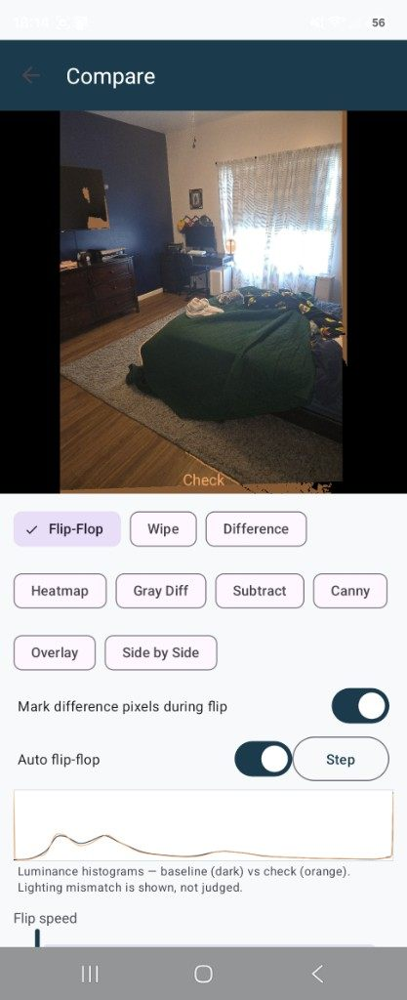
Flip-flop switches between baseline and check. Turn on “Mark difference pixels during flip” if you want marks while it flips.
Modes
Flip-Flop — alternate the two photos. Use auto flip or Step. Best first look.
Wipe — drag a slider to reveal one photo over the other.
Difference / Heatmap — color where pixels disagree.
Gray Diff / Subtract / Canny — gray, signed subtract, or edges only. Useful when color or lighting is noisy.
Overlay / Side by Side — both images at once.
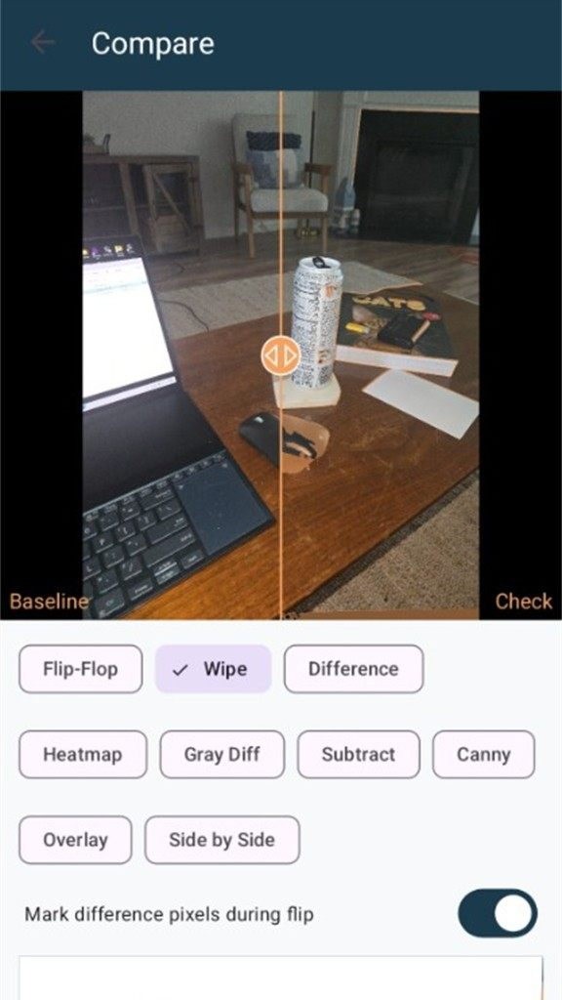
Wipe: Baseline on one side, Check on the other. Slide to hunt for a moved object.
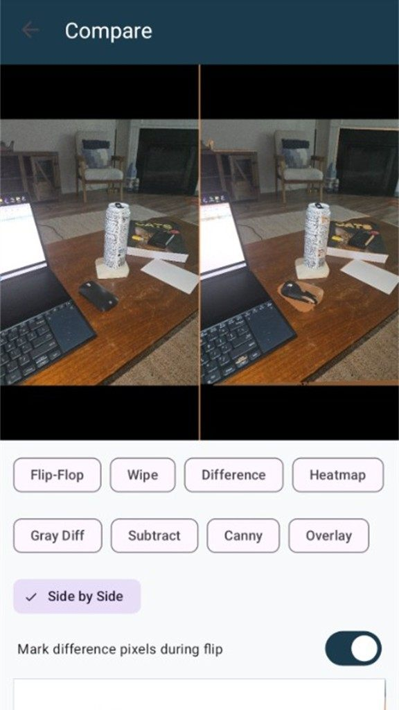
Side by side with optional difference outlines.
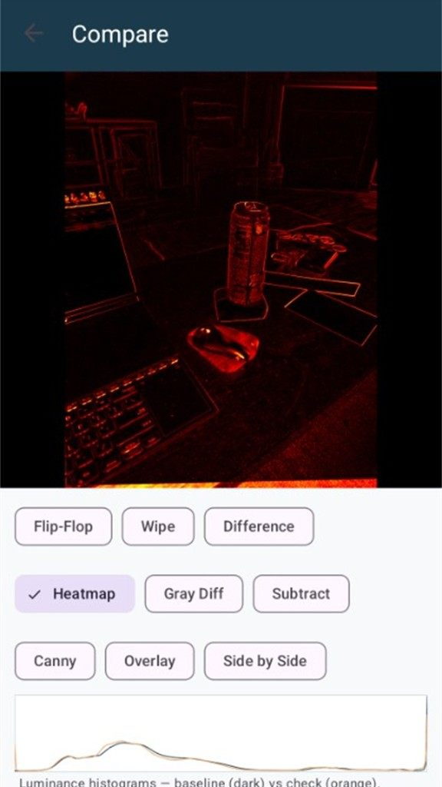
Heatmap emphasizes where the photos disagree.
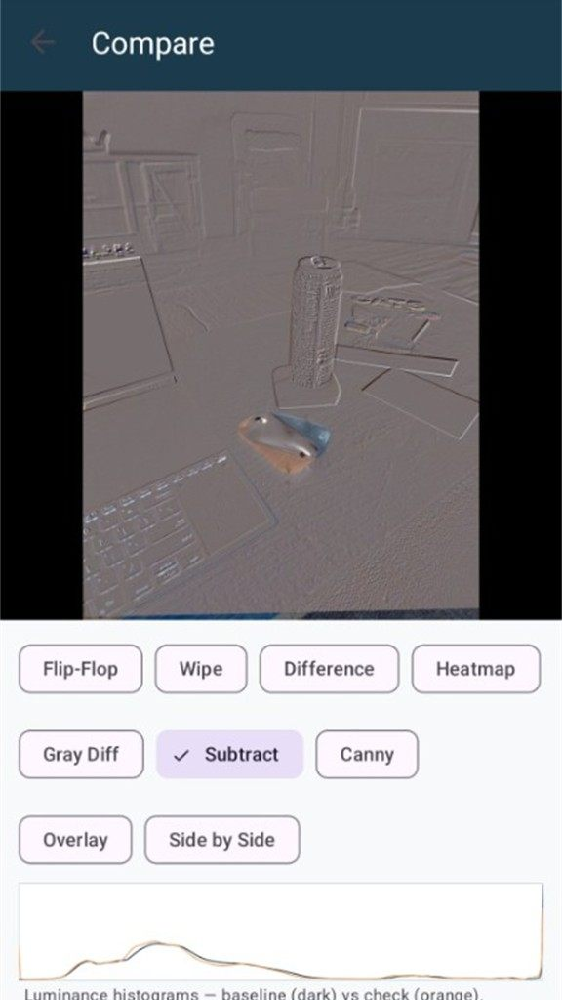
Subtract can make a small move (a can, a mouse, a screw) easier to see.
Sensitivity changes how much disagreement is marked.
Highlight color is only the mark color — it is not a severity score.
The histograms compare brightness between the two shots so you can see lighting
mismatch instead of treating it as a moved object.
Pinch to zoom. Double-tap to reset.
Ignore and include regions
Some motion is expected: a clock, a TV, a window, rumpled bedding.
Paint Ignore over those areas so they are not marked.
Paint Include to limit marking to a drawer, bag, laptop panel, or other region.
Restore erases brush strokes. You still decide importance.
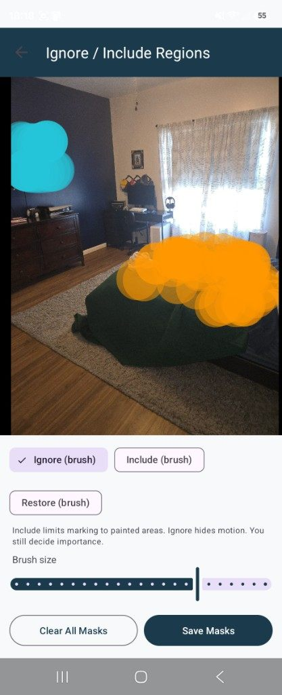
Ignore hides motion you do not care about. Include limits marks to the painted area.
For a laptop underside, include only the screw row or service panel.
For a hotel room, ignore the window and TV; include the desk, safe, or bag.
Check history
A session can have more than one check. Open check history to see each photo,
its FoM, and how many regions were marked. Delete a check if you retake it.
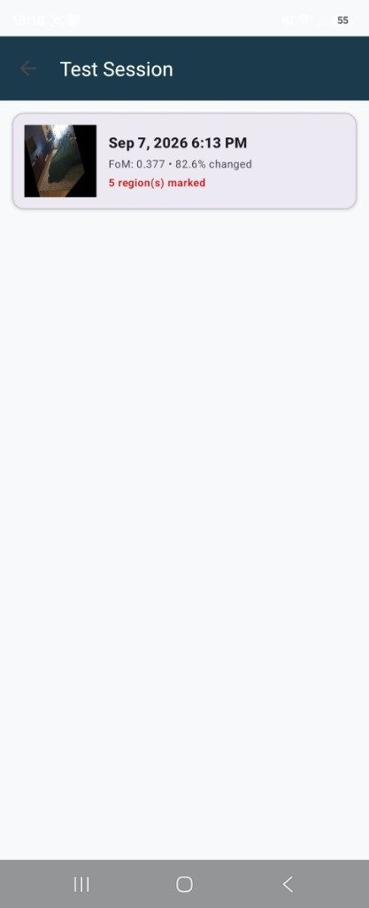
Each check keeps its own alignment stats. High “changed” percent often means a bad angle or lighting, not a conclusion.
Settings
The wrench on the session list opens Settings.
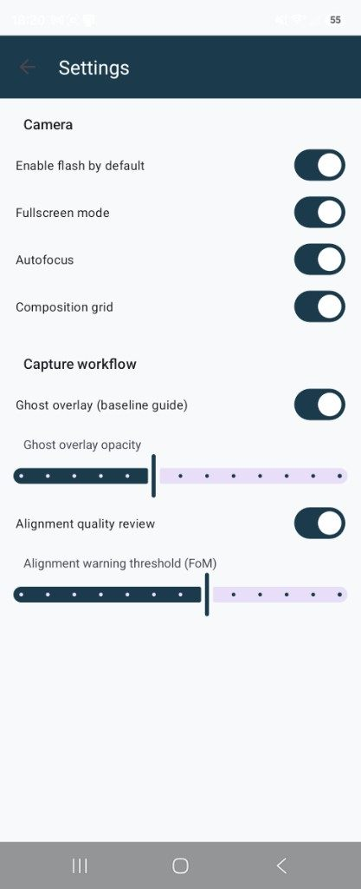
Camera defaults, ghost overlay, and the alignment-quality review live here.